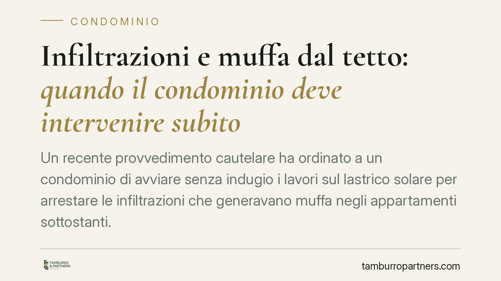

Infiltrazioni e muffa dal tetto: quando il condominio deve intervenire subito
Un recente provvedimento cautelare ha ordinato a un condominio di avviare senza indugio i lavori sul lastrico solare per arrestare le infiltrazioni che generavano muffa negli appartamenti sottostanti. Il principio è netto: la sola delibera assembleare non basta, servono opere effettive. I danni estetici interni, invece, restano al giudizio di merito.

Il caso
Un proprietario lamentava infiltrazioni continue provenienti dal lastrico solare condominiale, con formazione di muffa negli ambienti interni e rischi per la salubrità dell'abitazione. Il condominio aveva deliberato gli interventi, ma non li aveva avviati.
Il Tribunale ha accolto il ricorso d'urgenza, ordinando l'esecuzione immediata delle opere necessarie a fermare le infiltrazioni. Il punto centrale: una delibera che resta sulla carta non neutralizza il danno in corso. Rileva l'avvio concreto dei lavori, non l'intenzione di eseguirli.
Inquadramento normativo
Lo strumento utilizzato è il procedimento cautelare d'urgenza previsto dall'art. 700 del codice di procedura civile. Consente al giudice, prima e al di fuori del giudizio ordinario, di adottare provvedimenti atipici quando il diritto rischia un pregiudizio imminente e irreparabile nel tempo necessario a far valere la pretesa in via ordinaria.
Perché la tutela cautelare operi servono due condizioni:
- il fumus boni iuris, cioè la ragionevole fondatezza della pretesa: qui l'esistenza delle infiltrazioni e la loro provenienza dalla parte comune;
- il periculum in mora, cioè il pericolo che l'attesa dei tempi ordinari aggravi il danno: nel caso, il protrarsi dell'umidità e della muffa, con effetti sulla salubrità degli ambienti.
Sul piano sostanziale, la responsabilità del custode per i danni derivanti dalle parti comuni trova fondamento nell'art. 2051 c.c. (danno da cose in custodia). Occorre però distinguere il profilo risarcitorio dal riparto delle spese di manutenzione del lastrico solare ad uso esclusivo. Su quest'ultimo le Sezioni Unite della Cassazione (sent. n. 9449/2016) hanno chiarito che la ripartizione segue il criterio dell'art. 1126 c.c.: un terzo a carico di chi ha l'uso esclusivo del lastrico, i restanti due terzi sui proprietari dei piani sottostanti coperti dalla struttura. Sono due piani logici diversi: chi risponde del danno e chi paga le opere non coincidono necessariamente.
Implicazioni pratiche
Per chi subisce infiltrazioni dalle parti comuni, il messaggio è chiaro: la via cautelare è percorribile quando il danno è attivo e progressivo. Non serve attendere l'esito di un giudizio che può durare anni se, nel frattempo, l'umidità compromette l'abitabilità.
Per il condominio e l'amministratore, l'avvertimento è altrettanto preciso: aver deliberato gli interventi non mette al riparo. Finché le opere non partono davvero, il condominio resta esposto a un ordine giudiziale di esecuzione immediata e alle relative spese.
Va però tenuta distinta la richiesta cautelare dalla domanda risarcitoria. L'urgenza copre l'esigenza di fermare la fonte del danno. I danni estetici già prodotti negli appartamenti — intonaci rovinati, tinteggiature, arredi — sono una questione di quantificazione che richiede istruttoria e va fatta valere nel giudizio di merito, non in sede cautelare.
Cosa fare in concreto
- Documentate subito il danno. Fotografie datate, eventuale perizia tecnica sulla provenienza delle infiltrazioni e sullo stato di umidità sono la base del fumus.
- Formalizzate la segnalazione all'amministratore con comunicazione scritta, chiedendo l'intervento e fissando un termine. La prova dell'inerzia rafforza il periculum.
- Verificate titolarità e riparto. Accertate se il lastrico è ad uso esclusivo: incide sulla ripartizione delle spese ex art. 1126 c.c., ma non sull'obbligo di eseguire le opere urgenti.
- Valutate il ricorso ex art. 700 c.p.c. quando il danno è in corso e l'attesa aggrava la situazione. La delibera non attuata non esclude l'urgenza.
- Separate le domande. Trattate l'esecuzione urgente in via cautelare e riservate la quantificazione dei danni interni al giudizio di merito.
In sintesi
La tutela cautelare serve a interrompere un danno che continua a prodursi. Sul lastrico solare, l'obbligo di intervenire grava sul condominio a prescindere dalle delibere rimaste inattuate; il riparto delle spese segue regole proprie, distinte dalla responsabilità per i danni. Un approccio ordinato — documentazione, diffida, scelta dello strumento corretto — è il presupposto di ogni azione efficace.
---
Contributo informativo a cura di Tamburro & Partners - Avv. Giuseppe Tamburro. Non costituisce parere legale.
Ogni condominio ha una storia a sé.
Se gestisci un'amministrazione e vuoi un confronto su una specifica questione condominiale, scrivi allo studio. Ti rispondiamo entro un giorno lavorativo.